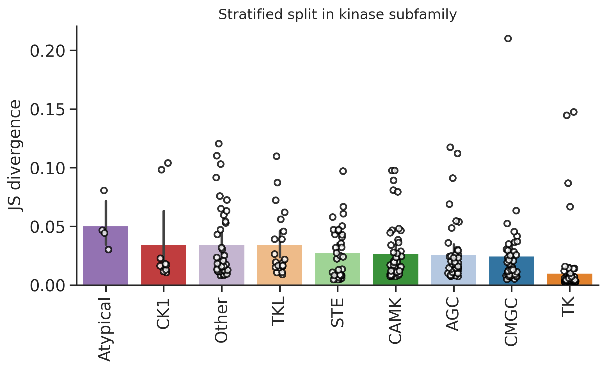
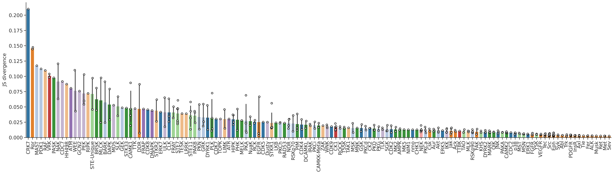
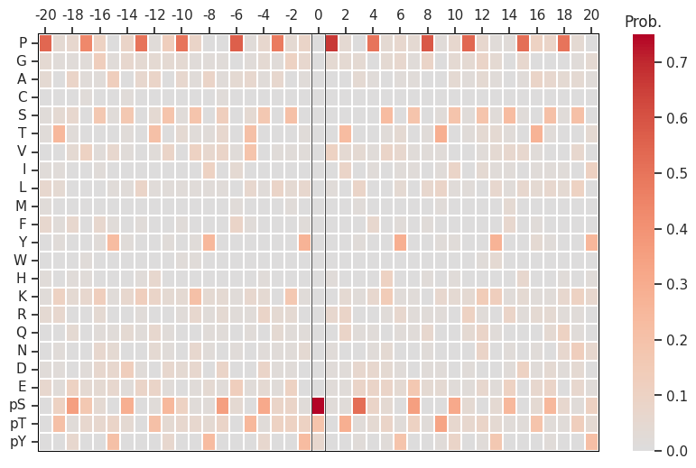
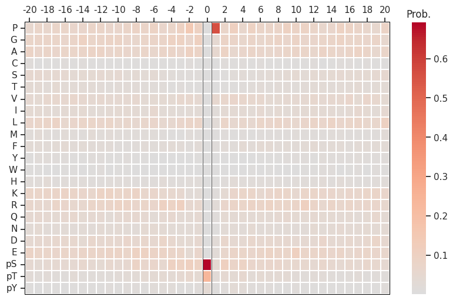
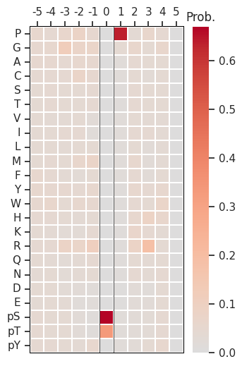

import numpy as np, pandas as pd
import os, random
from katlas.data import *
from katlas.train import *
from fastai.vision.all import *
from katlas.dnn import *DL training
Setup
seed_everything()def_device'cuda'Data
df=pd.read_parquet('train/cddm_t5.parquet')info=Data.get_kinase_info()
info = info[info.pseudo=='0']
info = info[info.kd_ID.notna()]
subfamily_map = info[['kd_ID','subfamily']].drop_duplicates().set_index('kd_ID')['subfamily']
family_map = info[['kd_ID','family']].drop_duplicates().set_index('kd_ID')['family']
group_map = info[['kd_ID','group']].drop_duplicates().set_index('kd_ID')['group']
kinase_info = pd.DataFrame(df.index.tolist(),columns=['kinase'])
kinase_info['subfamily'] = kinase_info.kinase.map(subfamily_map)
kinase_info['family'] = kinase_info.kinase.map(family_map)
kinase_info['group'] = kinase_info.kinase.map(group_map)df=df.reset_index()df.columnsIndex(['index', '-20P', '-19P', '-18P', '-17P', '-16P', '-15P', '-14P', '-13P',
'-12P',
...
'T5_1014', 'T5_1015', 'T5_1016', 'T5_1017', 'T5_1018', 'T5_1019',
'T5_1020', 'T5_1021', 'T5_1022', 'T5_1023'],
dtype='object', length=1968)# column name of feature and target
feat_col = df.columns[df.columns.str.startswith('T5_')]
target_col = df.columns[~df.columns.isin(feat_col)][1:]feat_colIndex(['T5_0', 'T5_1', 'T5_2', 'T5_3', 'T5_4', 'T5_5', 'T5_6', 'T5_7', 'T5_8',
'T5_9',
...
'T5_1014', 'T5_1015', 'T5_1016', 'T5_1017', 'T5_1018', 'T5_1019',
'T5_1020', 'T5_1021', 'T5_1022', 'T5_1023'],
dtype='object', length=1024)Split
kinase_info.subfamily.value_counts()subfamily
Eph 12
Src 11
NEK 7
STE7 7
CK1 6
..
GCN2 1
CDC7 1
CRK7 1
RAF 1
MAST 1
Name: count, Length: 137, dtype: int64kinase_info.family.value_counts()family
STE20 22
CAMKL 17
Eph 12
MAPK 12
Src 11
..
STK33 1
PDK1 1
CDC7 1
RAF 1
MAST 1
Name: count, Length: 88, dtype: int64kinase_info.group.value_counts()group
TK 80
CAMK 47
AGC 45
Other 40
CMGC 40
STE 35
TKL 21
CK1 9
Atypical 4
Name: count, dtype: int64splits = get_splits(kinase_info, stratified='subfamily',nfold=5)
split0 = splits[0]StratifiedKFold(n_splits=5, random_state=123, shuffle=True)
# subfamily in train set: 129
# subfamily in test set: 62/home/sky1ove/git/KATLAS/katlas/.venv/lib/python3.12/site-packages/sklearn/model_selection/_split.py:811: UserWarning: The least populated class in y has only 1 members, which is less than n_splits=5.
warnings.warn(Dataset
# dataset
ds = GeneralDataset(df,feat_col,target_col)len(ds)321dl = DataLoader(ds, batch_size=64, shuffle=True)xb,yb = next(iter(dl))
xb.shape,yb.shape(torch.Size([64, 1024]), torch.Size([64, 23, 41]))Model
n_feature = len(feat_col)
n_target = len(target_col)# def get_mlp(): return PSSM_model(n_feature,n_target,model='MLP')
def get_cnn(): return PSSM_model(n_feature,n_target,model='CNN')model = get_cnn()logits= model(xb)logits.shapetorch.Size([64, 23, 41])Loss
CE(logits,yb)tensor(3.3056, grad_fn=<MeanBackward0>)Metrics
KLD(logits,yb)tensor(0.5323, grad_fn=<MeanBackward0>)JSD(logits,yb)tensor(0.1246, grad_fn=<MeanBackward0>)CV train
cross-validation
oof = train_dl_cv(df,feat_col,target_col,
splits = splits,
model_func = get_cnn,
n_epoch=20,lr=3e-3,save='cnn_cddm')------fold0------
lr in training is 0.003| epoch | train_loss | valid_loss | KLD | JSD | time |
|---|---|---|---|---|---|
| 0 | 3.280726 | 3.129241 | 0.337730 | 0.086045 | 00:02 |
| 1 | 3.241528 | 3.118442 | 0.326931 | 0.084521 | 00:00 |
| 2 | 3.210858 | 3.108788 | 0.317277 | 0.081662 | 00:00 |
| 3 | 3.200399 | 3.069698 | 0.278187 | 0.072590 | 00:00 |
| 4 | 3.195693 | 2.976888 | 0.185377 | 0.049739 | 00:00 |
| 5 | 3.166100 | 2.936633 | 0.145121 | 0.037754 | 00:00 |
| 6 | 3.125916 | 2.919631 | 0.128121 | 0.033090 | 00:01 |
| 7 | 3.087971 | 2.914602 | 0.123091 | 0.031606 | 00:00 |
| 8 | 3.055577 | 2.901576 | 0.110064 | 0.028728 | 00:00 |
| 9 | 3.027860 | 2.899491 | 0.107980 | 0.027733 | 00:00 |
| 10 | 3.003763 | 2.902533 | 0.111022 | 0.027796 | 00:00 |
| 11 | 2.983750 | 2.907253 | 0.115742 | 0.028040 | 00:00 |
| 12 | 2.966198 | 2.906159 | 0.114648 | 0.027715 | 00:00 |
| 13 | 2.951153 | 2.890462 | 0.098951 | 0.025271 | 00:00 |
| 14 | 2.938202 | 2.896961 | 0.105450 | 0.026000 | 00:00 |
| 15 | 2.927059 | 2.889013 | 0.097502 | 0.024744 | 00:00 |
| 16 | 2.917379 | 2.883138 | 0.091627 | 0.023639 | 00:00 |
| 17 | 2.908887 | 2.883764 | 0.092253 | 0.023736 | 00:00 |
| 18 | 2.901805 | 2.882495 | 0.090985 | 0.023498 | 00:00 |
| 19 | 2.895772 | 2.881468 | 0.089957 | 0.023323 | 00:00 |
------fold1------
lr in training is 0.003| epoch | train_loss | valid_loss | KLD | JSD | time |
|---|---|---|---|---|---|
| 0 | 3.282995 | 3.131762 | 0.340881 | 0.086980 | 00:00 |
| 1 | 3.244184 | 3.107079 | 0.316198 | 0.082586 | 00:00 |
| 2 | 3.212950 | 3.107993 | 0.317112 | 0.080378 | 00:00 |
| 3 | 3.193774 | 3.121538 | 0.330657 | 0.082642 | 00:00 |
| 4 | 3.167385 | 2.969853 | 0.178972 | 0.047170 | 00:00 |
| 5 | 3.131219 | 2.931188 | 0.140307 | 0.036273 | 00:00 |
| 6 | 3.097315 | 2.932747 | 0.141867 | 0.035560 | 00:00 |
| 7 | 3.067635 | 2.908916 | 0.118035 | 0.030707 | 00:00 |
| 8 | 3.042018 | 2.896606 | 0.105726 | 0.027578 | 00:00 |
| 9 | 3.018694 | 2.896546 | 0.105665 | 0.027346 | 00:00 |
| 10 | 2.998577 | 2.895312 | 0.104431 | 0.026932 | 00:00 |
| 11 | 2.979638 | 2.890782 | 0.099901 | 0.025813 | 00:00 |
| 12 | 2.963013 | 2.885422 | 0.094542 | 0.024548 | 00:00 |
| 13 | 2.948291 | 2.881394 | 0.090513 | 0.023618 | 00:00 |
| 14 | 2.935376 | 2.880849 | 0.089968 | 0.023469 | 00:00 |
| 15 | 2.924094 | 2.879418 | 0.088537 | 0.023143 | 00:00 |
| 16 | 2.914247 | 2.878665 | 0.087784 | 0.022935 | 00:00 |
| 17 | 2.905600 | 2.877469 | 0.086588 | 0.022634 | 00:00 |
| 18 | 2.898063 | 2.876981 | 0.086100 | 0.022496 | 00:00 |
| 19 | 2.891908 | 2.876891 | 0.086010 | 0.022477 | 00:00 |
------fold2------
lr in training is 0.003| epoch | train_loss | valid_loss | KLD | JSD | time |
|---|---|---|---|---|---|
| 0 | 3.283071 | 3.125786 | 0.338809 | 0.087086 | 00:00 |
| 1 | 3.243163 | 3.112647 | 0.325670 | 0.084863 | 00:00 |
| 2 | 3.212751 | 3.106188 | 0.319211 | 0.081812 | 00:00 |
| 3 | 3.196648 | 3.052804 | 0.265827 | 0.069715 | 00:00 |
| 4 | 3.181442 | 2.967234 | 0.180257 | 0.047750 | 00:00 |
| 5 | 3.142172 | 2.931022 | 0.144045 | 0.037541 | 00:00 |
| 6 | 3.106615 | 2.921037 | 0.134060 | 0.034827 | 00:00 |
| 7 | 3.074585 | 2.903100 | 0.116123 | 0.030464 | 00:00 |
| 8 | 3.047058 | 2.895081 | 0.108105 | 0.028441 | 00:00 |
| 9 | 3.022375 | 2.890230 | 0.103253 | 0.027014 | 00:00 |
| 10 | 3.001265 | 2.892293 | 0.105316 | 0.027261 | 00:00 |
| 11 | 2.982467 | 2.889865 | 0.102888 | 0.026457 | 00:00 |
| 12 | 2.965854 | 2.892134 | 0.105158 | 0.026924 | 00:00 |
| 13 | 2.950974 | 2.892203 | 0.105226 | 0.027033 | 00:00 |
| 14 | 2.937788 | 2.884976 | 0.097999 | 0.025375 | 00:00 |
| 15 | 2.926371 | 2.881026 | 0.094049 | 0.024459 | 00:00 |
| 16 | 2.916605 | 2.880342 | 0.093365 | 0.024306 | 00:00 |
| 17 | 2.907900 | 2.879347 | 0.092370 | 0.024081 | 00:00 |
| 18 | 2.900450 | 2.878915 | 0.091938 | 0.023966 | 00:00 |
| 19 | 2.894217 | 2.878885 | 0.091908 | 0.023964 | 00:00 |
------fold3------
lr in training is 0.003| epoch | train_loss | valid_loss | KLD | JSD | time |
|---|---|---|---|---|---|
| 0 | 3.281781 | 3.130100 | 0.338414 | 0.086330 | 00:01 |
| 1 | 3.241858 | 3.115216 | 0.323530 | 0.083923 | 00:00 |
| 2 | 3.214578 | 3.122394 | 0.330708 | 0.084795 | 00:00 |
| 3 | 3.200605 | 3.057531 | 0.265845 | 0.068597 | 00:00 |
| 4 | 3.190122 | 3.004941 | 0.213255 | 0.054402 | 00:00 |
| 5 | 3.148860 | 2.935233 | 0.143547 | 0.036774 | 00:00 |
| 6 | 3.104152 | 2.919654 | 0.127968 | 0.032367 | 00:00 |
| 7 | 3.067126 | 2.911125 | 0.119439 | 0.030059 | 00:00 |
| 8 | 3.036318 | 2.903696 | 0.112010 | 0.028426 | 00:00 |
| 9 | 3.011183 | 2.902229 | 0.110543 | 0.028073 | 00:00 |
| 10 | 2.989630 | 2.903434 | 0.111748 | 0.028285 | 00:00 |
| 11 | 2.971614 | 2.901742 | 0.110056 | 0.027785 | 00:00 |
| 12 | 2.955904 | 2.899647 | 0.107962 | 0.027276 | 00:00 |
| 13 | 2.942173 | 2.897321 | 0.105635 | 0.026609 | 00:00 |
| 14 | 2.930472 | 2.895998 | 0.104312 | 0.026348 | 00:00 |
| 15 | 2.920269 | 2.894520 | 0.102834 | 0.025943 | 00:00 |
| 16 | 2.911502 | 2.894286 | 0.102600 | 0.025912 | 00:00 |
| 17 | 2.903862 | 2.894461 | 0.102775 | 0.025921 | 00:00 |
| 18 | 2.897451 | 2.894449 | 0.102764 | 0.025886 | 00:00 |
| 19 | 2.891985 | 2.894722 | 0.103036 | 0.025939 | 00:00 |
------fold4------
lr in training is 0.003| epoch | train_loss | valid_loss | KLD | JSD | time |
|---|---|---|---|---|---|
| 0 | 3.281242 | 3.128894 | 0.349759 | 0.089423 | 00:00 |
| 1 | 3.241549 | 3.110515 | 0.331380 | 0.086315 | 00:00 |
| 2 | 3.209649 | 3.109465 | 0.330330 | 0.084207 | 00:00 |
| 3 | 3.192693 | 3.038029 | 0.258894 | 0.068603 | 00:00 |
| 4 | 3.167978 | 2.975735 | 0.196599 | 0.052203 | 00:00 |
| 5 | 3.137975 | 2.930194 | 0.151059 | 0.039254 | 00:00 |
| 6 | 3.109928 | 2.925831 | 0.146696 | 0.037665 | 00:00 |
| 7 | 3.081912 | 2.908741 | 0.129606 | 0.033373 | 00:00 |
| 8 | 3.054173 | 2.900791 | 0.121655 | 0.031556 | 00:00 |
| 9 | 3.027997 | 2.893320 | 0.114184 | 0.029593 | 00:00 |
| 10 | 3.004325 | 2.890111 | 0.110976 | 0.028854 | 00:00 |
| 11 | 2.984124 | 2.885960 | 0.106825 | 0.027818 | 00:00 |
| 12 | 2.966473 | 2.885196 | 0.106061 | 0.027591 | 00:00 |
| 13 | 2.951298 | 2.884431 | 0.105296 | 0.027341 | 00:00 |
| 14 | 2.938138 | 2.883125 | 0.103990 | 0.027053 | 00:00 |
| 15 | 2.926639 | 2.880820 | 0.101684 | 0.026473 | 00:00 |
| 16 | 2.916837 | 2.880920 | 0.101785 | 0.026511 | 00:00 |
| 17 | 2.908477 | 2.880410 | 0.101275 | 0.026382 | 00:00 |
| 18 | 2.901303 | 2.880603 | 0.101468 | 0.026398 | 00:00 |
| 19 | 2.894974 | 2.880235 | 0.101100 | 0.026316 | 00:00 |
oof.to_parquet('raw/oof_cddm.parquet')Score
from katlas.clustering import *
from functools import partialdef score_df(target,pred,func):
distance = [func(target.loc[i],pred.loc[i,target.columns]) for i in target.index]
return pd.Series(distance,index=target.index)jsd_df = partial(score_df,func=js_divergence_flat)
kld_df = partial(score_df,func=kl_divergence_flat)target=df[target_col].copy()kinase_info['group_split'] = oof.nfoldkinase_info['group_jsd'] =jsd_df(target,oof)from katlas.plot import *set_sns()plot_bar(kinase_info,'group_jsd',group='group',palette=group_color,figsize=(8,4))
plt.ylabel('JS divergence')
plt.title('Stratified split in kinase subfamily')Text(0.5, 1.0, 'Stratified split in kinase subfamily')
group_color = pd.DataFrame(group_color).Tsty_color{'S': (0.12156862745098039, 0.4666666666666667, 0.7058823529411765),
'T': (0.6823529411764706, 0.7803921568627451, 0.9098039215686274),
'Y': (1.0, 0.4980392156862745, 0.054901960784313725)}group_color = group_color.reset_index(names='modi_group')info = Data.get_kinase_info()subfamily_color = info[['modi_group','subfamily']].merge(group_color).drop(columns=['modi_group']).set_index('subfamily')subfamily_color = subfamily_color.apply(tuple, axis=1).to_dict()plot_bar(kinase_info,'group_jsd',group='subfamily',palette = subfamily_color, figsize=(30,7))
plt.ylabel('JS divergence')
# plt.title('Stratified split in kinase subfamily')Text(0, 0.5, 'JS divergence')
kinase_info.sort_values('group_jsd')| kinase | subfamily | family | group | group_split | group_jsd | |
|---|---|---|---|---|---|---|
| 18 | Q06418_TYRO3_HUMAN_KD1 | Axl | Axl | TK | 4 | 0.002317 |
| 25 | P51813_BMX_HUMAN_KD1 | Tec | Tec | TK | 0 | 0.002320 |
| 1 | P29320_EPHA3_HUMAN_KD1 | Eph | Eph | TK | 1 | 0.002459 |
| 17 | P04629_NTRK1_HUMAN_KD1 | Trk | Trk | TK | 2 | 0.002460 |
| 15 | P54753_EPHB3_HUMAN_KD1 | Eph | Eph | TK | 1 | 0.002482 |
| ... | ... | ... | ... | ... | ... | ... |
| 320 | Q6P0Q8_MAST2_HUMAN_KD1 | MAST | MAST | AGC | 0 | 0.117464 |
| 318 | O14976_GAK_HUMAN_KD1 | NAK | NAK | Other | 3 | 0.120520 |
| 305 | Q01974_ROR2_HUMAN_KD1 | Ror | Ror | TK | 2 | 0.144621 |
| 317 | Q01973_ROR1_HUMAN_KD1 | Ror | Ror | TK | 3 | 0.147486 |
| 315 | Q9NYV4_CDK12_HUMAN_KD1 | CRK7 | CDK | CMGC | 3 | 0.210147 |
321 rows × 6 columns
from katlas.pssm import *def plot_one_pssm(target,pred,idx):
target_pssm = recover_pssm(target.loc[idx])
pred_pssm = recover_pssm(pred.loc[idx,target.columns])
plot_heatmap(target_pssm,figsize=(10,6))
plot_heatmap(pred_pssm,figsize=(10,6))set_sns(100)CDK12:
plot_one_pssm(target,oof,315)

Compare with pspa CDK12:
df2=pd.read_parquet('train/pspa_t5.parquet')series= df2[df2.index.str.contains('CDK12')].iloc[0]plot_heatmap<function katlas.pssm.plot_heatmap(heatmap_df, ax=None, position_label=True, figsize=(5, 6), include_zero=True, scale_pos_neg=False, colorbar_title='Prob.')>plot_heatmap(recover_pssm(series),figsize=(3.5,6))